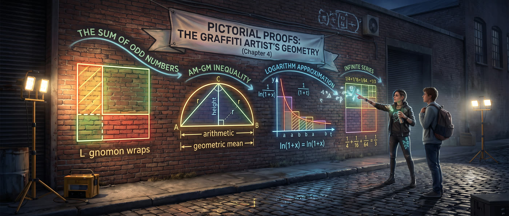

SUM OF ODD NUMBERS = PERFECT SQUARES:
1 + 3 + 5 + 7 + ... + (2n-1) = n²
THE L-SHAPED PROOF:
■ 1×1 = 1 = 1²
■ ■ ■ 2×2 = 4 = 2² (+3)
■ ■ ■ ■ ■ 3×3 = 9 = 3² (+5)
■ ■ ■ ■ ■ ■ ■ 4×4 = 16 = 4² (+7)
Each L-shape: n + n + 1 = 2n+1 (next odd)
ARITHMETIC ≥ GEOMETRIC MEAN:
┌─────────────────────────────────────────────┐
│ (a + b)/2 ≥ √(ab) │
│ │
│ Rectangle (a×b) has area ab. │
│ Square with same perimeter: side=(a+b)/2 │
│ Square area: [(a+b)/2]² ≥ ab │
│ ∴ (a+b)/2 ≥ √(ab) │
│ │
│ One picture. One inequality. Done. │
└─────────────────────────────────────────────┘
PHILOSOPHY: If you can SEE it, you can PROVE it.
The picture IS the proof — not a supplement to it.
FADE IN: A long brick wall in a back alley. Portable work lights cast harsh shadows. RAYA (20s, paint-stained overalls, geometric tattoos on her knuckles) is mid-piece — a massive mural of interlocking shapes. A COLLEGE KID (18, backpack, sneakers) watches from across the alley. COLLEGE KID That's incredible. How do you get the proportions so perfect without measuring? RAYA (not turning around, spray can hissing) I see the math. The shapes tell me the truth. COLLEGE KID What do you mean? RAYA (turning, pulling down her mask) You ever prove something in math class? Pages of algebra, symbols, equals signs? COLLEGE KID Yeah. Hated it. RAYA What if I told you that some of the deepest truths in mathematics can be proved with a picture? No algebra. No symbols. Just shapes that make the truth obvious. COLLEGE KID I'd say you're messing with me. RAYA (pulling out a thick chalk marker) Come here. I'll prove it. On this wall.
Raya draws a single square on the wall with chalk. RAYA What's 1 + 3? COLLEGE KID Four. RAYA What's 1 + 3 + 5? COLLEGE KID Nine. RAYA And 1 + 3 + 5 + 7? COLLEGE KID Sixteen. They're all perfect squares. RAYA Right. The sum of the first n odd numbers is n². That's a theorem. You could prove it with induction — half a page of algebra. Or... She draws on the wall: ■ ■ ■ ■ ■ ■ ■ ■ ■ ■ ■ ■ ■ ■ ■ ■ RAYA (CONT'D) Each odd number wraps around the previous square like an L-shaped border. One block is a 1×1 square. Add three — the L wraps it into a 2×2. Add five — wraps into 3×3. Add seven — 4×4. COLLEGE KID (staring at the wall) Each L-shape IS the next odd number... RAYA And each L-shape grows the square by one row and one column. The picture IS the proof. No induction. No base case. No inductive step. Just look at it and you KNOW.
COLLEGE KID But is that actually a proof? Or just... a demonstration? RAYA It's a proof. A rigorous one. The L-shape around an n×n square has exactly 2n+1 blocks — which is the (n+1)-th odd number. The picture shows this for every n simultaneously. That's more general than induction, not less. COLLEGE KID My professor would say "where's the rigor?" RAYA Your professor confuses rigor with notation. Rigor means: does the argument apply to all cases? Does it leave gaps? The picture answers yes and no — for every n, at a glance. She draws the next layer: 1×1: ■ → 1 block = 1² 2×2: ■■ → 4 blocks = 2² ■■ 3×3: ■■■ → 9 blocks = 3² ■■■ ■■■ RAYA (CONT'D) The L-shape going from n² to (n+1)² has: • n blocks on the new bottom row • n blocks on the new right column • 1 block in the corner Total: 2n + 1 — the (n+1)-th odd number. That's a complete proof. The picture just makes it obvious instead of obscure. COLLEGE KID (nodding slowly) Okay. I'm listening.
Raya moves to a fresh section of wall. Draws a rectangle. RAYA Here's a bigger one. The arithmetic mean — the average — is always greater than or equal to the geometric mean. For any two positive numbers a and b: (a + b)/2 ≥ √(ab) Algebraic proof takes a page. Pictorial proof takes one rectangle. COLLEGE KID A rectangle? RAYA A rectangle with sides a and b has area ab. A square with the same perimeter — side length (a+b)/2 — has area [(a+b)/2]². She draws both: Rectangle: a × b → area = ab Square: (a+b)/2 × (a+b)/2 → area = [(a+b)/2]² RAYA (CONT'D) Now here's the key: of all rectangles with a fixed perimeter, the SQUARE has the largest area. That's a geometric fact you can SEE — any other rectangle with the same perimeter is "squeezed" and loses area. COLLEGE KID So the square's area is bigger than the rectangle's area... RAYA [(a+b)/2]² ≥ ab Take the square root of both sides: (a+b)/2 ≥ √(ab) That's the AM-GM inequality. Proved by drawing a square and a rectangle. COLLEGE KID (eyes wide) One picture. One inequality. That's... elegant.
RAYA Here's another way to see it. Even simpler. Take any two positive numbers a and b. Draw a line segment of length a + b. Mark the midpoint — that's at (a+b)/2 from each end. She draws on the wall: |----a----|----b----| |---------(a+b)/2---------| (midpoint) RAYA (CONT'D) Now draw a semicircle with diameter a + b. The midpoint is the center — so the radius is (a+b)/2. The height of the semicircle at the point where a meets b is... √(ab). That's the geometric mean. COLLEGE KID How? RAYA Right triangle inscribed in a semicircle. The altitude from the right angle to the hypotenuse equals √(ab) when the two segments of the hypotenuse are a and b. Classic result. She sketches the semicircle with the perpendicular: Radius (from center to arc) = (a+b)/2 Height (at the junction point) = √(ab) RAYA (CONT'D) The height can never exceed the radius. A point inside a circle is always closer to the center than the circle itself. So: √(ab) ≤ (a+b)/2 Same inequality. Different picture. Both completely visual. COLLEGE KID And equality happens when... RAYA When a equals b. The rectangle becomes a square. The junction point sits at the top of the semicircle. Everything agrees. That's the beauty — the picture tells you WHEN equality holds too.
RAYA AM-GM isn't just theory. It solves optimization problems. Say you've got twenty feet of fence and you want to maximize the area of a rectangular garden against a wall. COLLEGE KID I did that in calculus. Take the derivative, set it to zero... RAYA Or: recognize that the area is a product of two things that add to a constant. That's AM-GM territory. She draws the garden — three sides of fence, wall on the fourth: Width: x Length: (20 - 2x) [fence minus two widths] Area: x(20 - 2x) RAYA (CONT'D) The product of two positive numbers with a fixed sum is maximized when they're equal. But here the sum isn't quite fixed in the right form... She rewrites: Let a = 2x and b = (20 - 2x). Then a + b = 20, and the area is ab/2. RAYA (CONT'D) Area = ab/2 is maximized when a = b. So 2x = 20 - 2x → x = 5. Width is 5, length is 10. Area is 50 square feet. COLLEGE KID No derivative? RAYA No derivative. AM-GM says: equal factors give maximum product. The picture of a square being the fattest rectangle — that's the whole proof. Calculus gives the same answer with more work. COLLEGE KID The picture does the optimization for you. RAYA The picture IS the optimization.
Raya pulls out a wider chalk marker and draws a curve on the wall — the function 1/(1+t) from 0 to x. RAYA You know what ln(1+x) is? COLLEGE KID The natural log of one plus x. The integral of 1/(1+t) from 0 to x. RAYA Right. And the Taylor series is x - x²/2 + x³/3 - ... But forget the series. Look at the AREA. She shades the region under the curve from 0 to x. RAYA (CONT'D) Simplest approximation: a circumscribed rectangle. Height 1, width x. Area is x. That's the first term of the Taylor series. She draws the rectangle around the curve: Rectangle (over): height 1, width x → area = x RAYA (CONT'D) Now an inscribed rectangle. Height 1/(1+x), width x. Area is x/(1+x). That's smaller than the true area. Rectangle (under): height 1/(1+x), width x → area = x/(1+x) RAYA (CONT'D) One overestimates, one underestimates. Average them — you get a trapezoid: Trapezoid area = [x + x/(1+x)] / 2 ≈ x - x²/2 COLLEGE KID That's the first TWO terms of the Taylor series! RAYA From a picture. No derivatives. No limit computations. The geometry of over- and under-estimates gives you the Taylor series for free.
RAYA This is the deep idea. An integral IS an area. A Taylor series IS a sequence of better and better area approximations. The pictures aren't illustrations — they're the actual mathematical objects. COLLEGE KID So when you draw the curve and the trapezoid... RAYA I'm not "visualizing" the math. I'm DOING the math. The picture is the proof. The shape is the calculation. She steps back and looks at the wall — odd-number L-shapes, rectangles, semicircles, curves. RAYA (CONT'D) Think about ln(2). That's ln(1+1), so x = 1 in our formula. The Taylor series converges slowly — you need dozens of terms. But if I rewrite it... She draws: ln(2) = ln(4/3) + ln(3/2) = ln(1 + 1/3) + ln(1 + 1/2) RAYA (CONT'D) Now x is 1/3 and 1/2. Much smaller. The rectangle approximation — just the first term — gives: ln(2) ≈ 1/3 + 1/2 = 5/6 ≈ 0.833 Actual value is 0.693. Not great. But rewrite AGAIN: ln(2) = ln(4/3) - ln(2/3) ??? No — better: ln(2) = ln(4/3) + ln(3/2) ... COLLEGE KID You're splitting the problem into pieces where the approximation works better. RAYA Exactly. Same principle as the mural — I don't paint the whole wall at once. I break it into panels where each piece is manageable.
RAYA One more. Summing an infinite series. What's 1/4 + 1/16 + 1/64 + ...? COLLEGE KID Geometric series. First term 1/4, ratio 1/4. Sum is (1/4)/(1 - 1/4) = 1/3. RAYA Good. Now PROVE it with a picture. She draws a square, then divides it: RAYA (CONT'D) Start with a unit square. Divide it into four equal quadrants. Shade one — that's 1/4. Take one of the remaining quadrants and divide IT into four. Shade one — that's 1/16 of the original. Keep going. ┌──┬──┐ │▓▓│ │ │▓▓│ │ ├──┼──┤ │ │▓ │ ← 1/16 │ │ │ └──┴──┘ RAYA (CONT'D) The shaded region approaches exactly one-third of the total square. You can SEE it — the shaded pieces fill one of the three non-shaded regions completely as you go to infinity. COLLEGE KID It's like... a fractal tiling. RAYA It IS a fractal tiling. And the geometric truth — that the shaded area converges to 1/3 — is visible. Not computed. Not derived. VISIBLE. COLLEGE KID So pictorial proofs aren't just for simple things. They work on infinite series too. RAYA They work on anything that has STRUCTURE. If a mathematical object has shape — area, length, volume, proportion — you can prove things about it by drawing.
Raya steps back. The wall is covered: L-shaped odd numbers, rectangles and semicircles, curves with trapezoids, fractal squares. It looks like a mural of mathematics itself. RAYA (capping her chalk marker) Here's what pictorial proofs give you. She gestures at the wall. RAYA (CONT'D) Insight. An algebraic proof tells you THAT something is true. A pictorial proof tells you WHY. The L-shapes don't just prove the sum of odd numbers — they show you the mechanism. The growing border. Speed. Drawing a rectangle takes five seconds. Writing out induction takes five minutes. Both prove the same thing. Memory. You'll forget the algebra by Friday. You'll never forget that the sum of odd numbers builds a staircase of squares. Pictures stick. COLLEGE KID (staring at the wall) My professor says pictures aren't rigorous. RAYA Your professor is confusing notation with rigor. A proof is rigorous if it applies to all cases and leaves no gaps. Pictures can do that. They just don't LOOK like what your professor was taught to call a proof. She picks up her spray cans, starts packing her bag. RAYA (CONT'D) Mathematics was visual for two thousand years before formalism took over. Euclid proved everything with pictures. The formalists added the notation later. The pictures came first. They'll outlast the notation too. She slings her bag over her shoulder, takes one last look at the mural-proof wall, and walks into the night. FADE OUT.